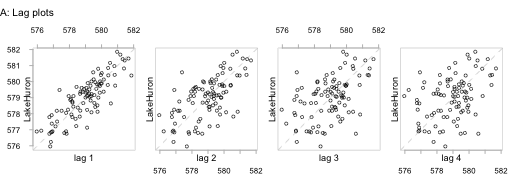
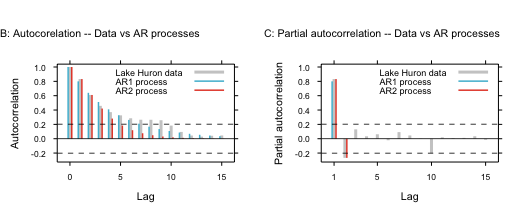
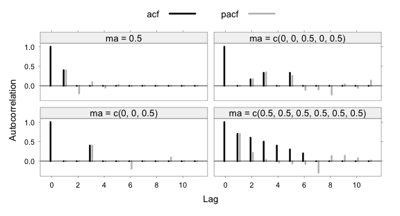
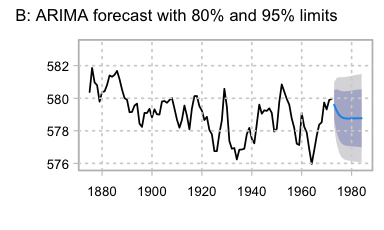
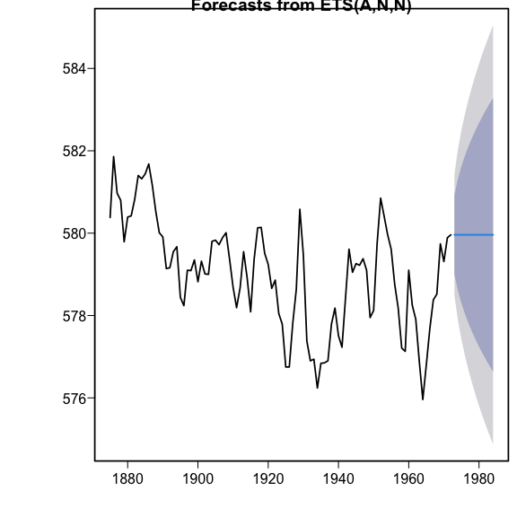
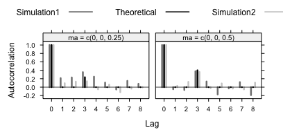

6 Chapter 6: Time series models
Packages required (plus any dependencies)
DAAG ggsci latticeExtra ggplot2 mice car forecast mgcv tseries
Additionally, knitr and Hmisc are required in order to process the Rmd source file.
Section 6.1: Time series – some basic ideas
Subsection 6.1.1: Time series objects
class("lakeHuron")[1] "character"## Use `time()` to extract the `time` attribute
range(time(LakeHuron))[1] 1875 1972## Use `window()` to subset a time series
LHto1925 <- window(LakeHuron, from=1875, to=1925)jobs <- DAAG::jobs
names(jobs)[1] "BC" "Alberta" "Prairies" "Ontario" "Quebec" "Atlantic" "Date" allRegions <- ts(jobs[, -7]) # Create multivariate time series
time(allRegions) # Times run from 1 to 24Time Series:
Start = 1
End = 24
Frequency = 1
[1] 1 2 3 4 5 6 7 8 9 10 11 12 13 14 15 16 17 18 19 20 21 22 23 24allRegions <- ts(jobs[, -7], start=c(1995,1), frequency=12)
allRegions[,"BC"] # Extract jobs data for British Columbia Jan Feb Mar Apr May Jun Jul Aug Sep Oct Nov Dec
1995 1752 1737 1765 1762 1754 1759 1766 1775 1777 1771 1757 1766
1996 1786 1784 1791 1800 1800 1798 1814 1803 1796 1818 1829 1840jobsBC <- ts(jobs[, "BC"], start=c(1995,1), frequency=12)
# Obtain equivalent of `allRegions[,"BC"]` directly from `jobs` datasetSubsection 6.1.2: Preliminary graphical exploration
## Plot depth measurements: ts object LakeHuron (datasets)
plot(LakeHuron, ylab="depth (in feet)", xlab = "Time (in years)", fg="gray")lag.plot(LakeHuron, lags=3, do.lines=FALSE)Subsection 6.1.3: The autocorrelation and partial autocorrelation function

par(oma=c(0,0,1.5,0))
par(pty="s")
lag.plot(LakeHuron, set.lags=1:4,do.lines=F, oma=c(0,1.5,1.5,1.5),
fg="gray", layout=c(1,4), cex.lab=1.15, asp=1)
mtext(side=3, line=0.5, "A: Lag plots", adj=0, cex=0.85, outer=TRUE)
library(lattice)
col3 <- c("gray80",rev(ggsci::pal_npg()(2)))
lag.max <- 15
offset <- 0.18
ci95 <- 2/sqrt(length(LakeHuron))
ar2 <- ar(LakeHuron)
gph.key <- list(x=0.975, y=0.965, corner=c(1,1), columns=1, cex=0.85,
text=list(c("Lake Huron data","AR1 process","AR2 process")),
lines=list(lwd=c(3,1.5,1.5), col=col3,lend=2),
padding.text=1)
parsetBC <- list(fontsize=list(text=8, points=5),
superpose.line=list(col=col3, lty=rep(1,3),
lwd=c(3,1.5,1.5)))
parsetBC <- modifyList(parsetBC,list(grid.pars = list(lineend = "butt")))
lev3 <- factor(c("acfData","acfAR1","acfAR2"),
levels=c("acfData","acfAR1","acfAR2"))
acfData <- acf(LakeHuron, main="", plot=FALSE, lag.max=lag.max)$acf
pacfData <- pacf(LakeHuron, main="", plot=FALSE, lag.max=lag.max)$acf
acfAR1 <- ARMAacf(ar=0.8, lag.max=lag.max)
acfAR2 <- ARMAacf(ar=ar2$ar, ma=0, lag.max=lag.max)
pacfAR1 <- ARMAacf(ar=0.8, lag.max=lag.max, pacf=TRUE)
pacfAR2 <- ARMAacf(ar=ar2$ar, ma=0, lag.max=lag.max, pacf=TRUE)
xy <- data.frame(acf=c(acfData,acfAR1,acfAR2),
Lag=c(rep(0:lag.max,3))+rep(c(0,-offset,offset),
rep(lag.max+1,3)),
gp=rep(lev3, rep(lag.max+1,3)))
gphB <- xyplot(acf ~ Lag, data = xy, groups=gp, type=c("h"),
par.strip.text = list(cex = 0.85), lend=2,origin=0,
ylim=c(-0.325, 1.04),key=gph.key, par.settings=parsetBC,
panel=function(x,y,...){
panel.xyplot(x,y,...)
panel.abline(h=0, lwd=0.8)
panel.abline(h=ci95, lwd=0.8, lty=2)
panel.abline(h=-ci95, lwd=0.8, lty=2) } )
xyp <- data.frame(pacf=c(pacfData,pacfAR1,pacfAR2),
Lag=c(rep(1:lag.max,3))+c(rep(c(0,-offset,offset),
rep(lag.max,3))), gp=rep(lev3, rep(lag.max,3)))
gphC <- xyplot(pacf ~ Lag, data = xyp, groups=gp, type=c("h"),
par.strip.text = list(cex = 0.85), lend=2,
ylab = "Partial correlation", origin=0, ylim=c(-0.325, 1.04),
key=gph.key, par.settings=parsetBC,
panel=function(x,y,...){
panel.xyplot(x,y,...)
panel.abline(h=0, lwd=0.8)
panel.abline(h=ci95, lwd=0.8, lty=2)
panel.abline(h=-ci95, lwd=0.8, lty=2) } )
print(update(gphB, scales=list(alternating=FALSE, tck=0.5),
ylab = "Autocorrelation",
main=list("B: Autocorelation -- Data vs AR processes",
font=1, x=0, y=0.25, just="left", cex=1)),
pos=c(0,0,0.5,0.9))
print(update(gphC,
scales=list(x=list(at=c(1,5,10,15)), alternating=FALSE, tck=0.5),
ylab = "Partial autocorrelation",
main=list("C: Partial autocorrelation -- Data vs AR processes",
font=1, x=0, y=0.25, just="left", cex=1)),
pos=c(0.5,0,1,0.9),newpage=FALSE)acf(LakeHuron)
## pacf(LakeHuron) gives the plot of partial autocorrelationsSubsection 6.1.4: Autoregressive (AR) models
The AR(1) model
## Yule-Walker autocorrelation estimate
LH.yw <- ar(LakeHuron, order.max = 1, method = "yw") # autocorrelation estimate
# order.max = 1 for AR(1) model
LH.yw$ar # autocorrelation estimate of alpha[1] 0.8319112## Maximum likelihood estimate
LH.mle <- ar(LakeHuron, order.max = 1, method = "mle")
LH.mle$ar # maximum likelihood estimate of alpha[1] 0.837546LH.mle$x.mean # estimated series mean[1] 579.1141LH.mle$var.pred # estimated innovation variance[1] 0.5092867The general AR(p) model
ar(LakeHuron, method="mle")
Call:
ar(x = LakeHuron, method = "mle")
Coefficients:
1 2
1.0437 -0.2496
Order selected 2 sigma^2 estimated as 0.4788~Moving average (MA) processes

Subsection 6.1.5: ~Autoregressive moving average (ARMA) models – theory
Subsection 6.1.6: Automatic model selection?
library(forecast, quietly=TRUE)
(aaLH <- auto.arima(LakeHuron, approximation=F, stepwise=F))Series: LakeHuron
ARIMA(2,1,1)
Coefficients:
ar1 ar2 ma1
0.9712 -0.2924 -0.9108
s.e. 0.1137 0.1030 0.0712
sigma^2 = 0.5003: log likelihood = -102.54
AIC=213.07 AICc=213.51 BIC=223.37## Check that model removes most of the correlation structure
acf(resid(aaLH, type="innovation")) # `type="innovation"` is the defaultauto.arima(LakeHuron)Series: LakeHuron
ARIMA(0,1,0)
sigma^2 = 0.5588: log likelihood = -109.11
AIC=220.22 AICc=220.26 BIC=222.79(aaLH0 <- auto.arima(LakeHuron, d=0, approximation=F, stepwise=F))Series: LakeHuron
ARIMA(1,0,1) with non-zero mean
Coefficients:
ar1 ma1 mean
0.7449 0.3206 579.0555
s.e. 0.0777 0.1135 0.3501
sigma^2 = 0.4899: log likelihood = -103.25
AIC=214.49 AICc=214.92 BIC=224.83
plot(forecast(aaLH0, h=12)) ## `level=c(80,95)` is the default
fcETS <- forecast(LakeHuron, h=12)
plot(fcETS)
plot(forecast(aaLH, h=12, level=c(80,95))) # Panel B; ARIMA(2,1,1)
auto.arima(LakeHuron, d=0, max.Q=0, approximation=F, stepwise=F)Series: LakeHuron
ARIMA(1,0,1) with non-zero mean
Coefficients:
ar1 ma1 mean
0.7449 0.3206 579.0555
s.e. 0.0777 0.1135 0.3501
sigma^2 = 0.4899: log likelihood = -103.25
AIC=214.49 AICc=214.92 BIC=224.83Use of simulation as a check

oldpar <- par(mfrow=c(2,2), mar=c(3.1,4.6,2.6, 1.1))
for(i in 1:2){
simts <- arima.sim(model=list(order=c(0,0,3), ma=c(0,0,0.25*i)), n=98)
acf(simts, main="", xlab="")
mtext(side=3, line=0.5, paste("ma3 =", 0.25*i), adj=0)
}
par(oldpar)set.seed(29) # Ensure that results are reproducible
estMAord <- matrix(0, nrow=4, ncol=20)
for(i in 1:4){
for(j in 1:20){
simts <- arima.sim(n=98, model=list(ma=c(0,0,0.125*i)))
estMAord[i,j] <- auto.arima(simts, start.q=3)$arma[2] }
}
detectedAs <- table(row(estMAord), estMAord)
dimnames(detectedAs) <- list(ma3=paste(0.125*(1:4)),
Order=paste(0:(dim(detectedAs)[2]-1)))print(detectedAs) Order
ma3 0 1 2 3 4
0.125 18 2 0 0 0
0.25 11 3 0 6 0
0.375 7 2 2 7 2
0.5 1 1 0 13 5Subsection 6.1.7: Seasonal effects
suppressPackageStartupMessages(library(ggplot2))
mdb12AVt1980on <- window(DAAG::mdbAVtJtoD, c(1980,1))
AVt.ets <- ets(mdb12AVt1980on)
autoplot(AVt.ets, main="", fg="gray") +
ggplot2::ggtitle("A: Components of ETS fit") +
theme(plot.title = element_text(hjust=0, vjust=0.5, size=11))
monthplot(mdb12AVt1980on, col.base=2, fg="gray")
title("B: Seasonal component, SI ratio",
font.main=1, line=1, adj=0, cex=1.25)bomreg <- DAAG::bomregions2021
## Plot time series mdbRain, SOI, and IOD: ts object bomregions2021 (DAAG)
gph <- xyplot(ts(bomreg[, c("mdbRain", "mdbAVt", "SOI", "IOD")], start=1900),
xlab="", type=c('p','smooth'), scales=list(alternating=rep(1,3)))
update(gph, layout=c(4,1), par.settings=DAAG::DAAGtheme(color=F))suppressPackageStartupMessages(library(mgcv))
bomreg <- within(DAAG::bomregions2021, mdbrtRain <- mdbRain^0.5)
## Check first for a sequential correlation structure, after
## fitting smooth terms s(CO2), s(SOI), and s(IOD)
library(mgcv)
mdbrtRain.gam <- gam(mdbrtRain~s(CO2) + s(SOI) + s(IOD), data=bomreg)
auto.arima(resid(mdbrtRain.gam))Series: resid(mdbrtRain.gam)
ARIMA(0,0,0) with zero mean
sigma^2 = 4.424: log likelihood = -263.82
AIC=529.64 AICc=529.67 BIC=532.44plot(mdbrtRain.gam, residuals=T, cex=2, fg="gray")
## Do also `gam.check(mdbrtRain.gam)` (Output looks fine)anova(mdbrtRain.gam)
Family: gaussian
Link function: identity
Formula:
mdbrtRain ~ s(CO2) + s(SOI) + s(IOD)
Approximate significance of smooth terms:
edf Ref.df F p-value
s(CO2) 2.144 2.673 4.345 0.01090
s(SOI) 2.058 2.637 12.581 2.72e-06
s(IOD) 1.000 1.000 9.696 0.00233Box.test(resid(mdbrtRain.gam), lag=10, type="Ljung")
Box-Ljung test
data: resid(mdbrtRain.gam)
X-squared = 11.935, df = 10, p-value = 0.2894## Examine normality of estimates of "residuals"
qqnorm(resid(mdbrtRain.gam))The mdbAVt series
mdbAVt.gam <- gam(mdbAVt ~ s(CO2)+s(SOI)+s(IOD), data=bomreg)
auto.arima(resid(mdbAVt.gam))Series: resid(mdbAVt.gam)
ARIMA(0,0,0) with zero mean
sigma^2 = 0.1689: log likelihood = -59.33
AIC=120.67 AICc=120.7 BIC=123.39anova(mdbAVt.gam)
Family: gaussian
Link function: identity
Formula:
mdbAVt ~ s(CO2) + s(SOI) + s(IOD)
Approximate significance of smooth terms:
edf Ref.df F p-value
s(CO2) 1.855 2.312 41.842 < 2e-16
s(SOI) 1.000 1.000 10.688 0.00145
s(IOD) 1.000 1.000 0.005 0.94403mdbAVt1.gam <- gam(mdbAVt ~ s(CO2)+s(SOI), data=bomreg)plot(mdbAVt1.gam, residuals=TRUE)
faclevs <- c("A: Rainfall", expression("B: Average Temp ("^o*"C)"))
fitrain <- fitted(mdbrtRain.gam)
fitAVt <- c(rep(NA,10), fitted(mdbAVt1.gam))
gph <- xyplot(mdbrtRain+mdbAVt~Year,data=bomreg, outer=T, xlab="", ylab="",
scales=list(y=list(relation='free',
at=list(sqrt((3:8)*100),(33:39)/2),
labels=list((3:8)*100,(33:39)/2)), x=list(alternating=rep(1,2))),
strip=strip.custom(factor.levels=faclevs))
gph + latticeExtra::as.layer(xyplot(fitrain+fitAVt~Year, outer=T,
scales=list(y=list(relation='free')),
data=bomreg, pch=3, col=2))## Use `auto.arima()` to choose the ARIMA order:
aaFitCO2 <- with(bomreg[-(1:10),], auto.arima(mdbAVt, xreg=cbind(CO2,SOI)))
## Try including a degree 2 polynomial term
aaFitpol2CO2 <- with(bomreg[-(1:10),],
auto.arima(mdbAVt, xreg=cbind(poly(CO2,2),SOI)))
cbind(AIC(aaFitCO2, aaFitpol2CO2), BIC=BIC(aaFitCO2, aaFitpol2CO2)) df AIC BIC.df BIC.BIC
aaFitCO2 7 125.3765 7 144.4060
aaFitpol2CO2 5 129.0109 5 142.6033Subsection 6.1.9: A calibration problem with time series errors
flakes <- DAAG::frostedflakes
calib.arima <- with(flakes, auto.arima(IA400, xreg=Lab))
calib.arimaSeries: IA400
Regression with ARIMA(0,0,1) errors
Coefficients:
ma1 intercept xreg
0.3876 6.9235 0.8323
s.e. 0.0859 2.5634 0.0679
sigma^2 = 3.278: log likelihood = -199.81
AIC=407.62 AICc=408.04 BIC=418.04with(flakes, coef(auto.arima(IA400/Lab, approximation=F, stepwise=F))) ma1 intercept
0.3718151 1.0173303 with(flakes, coef(auto.arima(IA400-Lab, approximation=F, stepwise=F))) ma1 intercept
0.3838733 0.6201945 Section 6.2: Nonlinear time series
x <- numeric(999) # x will contain the ARCH(1) errors
x0 <- rnorm(1)
for (i in 1:999){
x0 <- rnorm(1, sd=sqrt(.25 + .95*x0^2))
x[i] <- x0
}suppressPackageStartupMessages(library(tseries))
garch(x, order = c(0, 1), trace=FALSE)
Call:
garch(x = x, order = c(0, 1), trace = FALSE)
Coefficient(s):
a0 a1
0.2804 0.9633 Section 6.3: Further reading
Spatial statistics
Other time series models and packages
Section 6.4: Exercises
6.4
xx <- matrix(x, ncol=1000)6.7
library(tseries)
data(ice.river)
river1 <- diff(log(ice.river[, 1]))6.9
library(forecast)
Eu1 <- window(EuStockMarkets[,1], end = c(1996, 260))
Eu1nn <- nnetar(Eu1)
Eu1f <- forecast(Eu1nn, end=end(EuStockMarkets[,1]))
plot(Eu1f, ylim=c(1400, 7000))
lines(EuStockMarkets[,1])6.10a
airq <- cbind(airquality[, 1:4], day=1:nrow(airquality))
# Column 5 ('day' starting May 1) replaces columns 'Month' & 'Day')
library(mgcv)
temp.gam <- gam(Temp~s(day), data=airq)
tempAR1.gamm <- gamm(Temp~s(day), data=airq, correlation=corAR1())
plot(temp.gam, res=T, cex=2)
plot(tempAR1.gamm$gam, res=T, cex=2)6.10b
(Phi <- coef(tempAR1.gamm$lme$modelStruct$corStruct, unconstrained = FALSE) )
Sigma <- sqrt(tempAR1.gamm$gam$sig2)
## Simulate an AR1 process with this parameter
AR1.sim <- arima.sim(model=list(ar=Phi), n=nrow(airq), sd=Sigma)
simSeries <- AR1.sim+fitted(tempAR1.gamm$gam)
plot(I(1:nrow(airq)), simSeries)
## Compare with initial series
plot(I(1:nrow(airq)), airq$Temp)if(file.exists("/Users/johnm1/pkgs/PGRcode/inst/doc/")){
code <- knitr::knit_code$get()
txt <- paste0("\n## ", names(code),"\n", sapply(code, paste, collapse='\n'))
writeLines(txt, con="/Users/johnm1/pkgs/PGRcode/inst/doc/ch6.R")
}